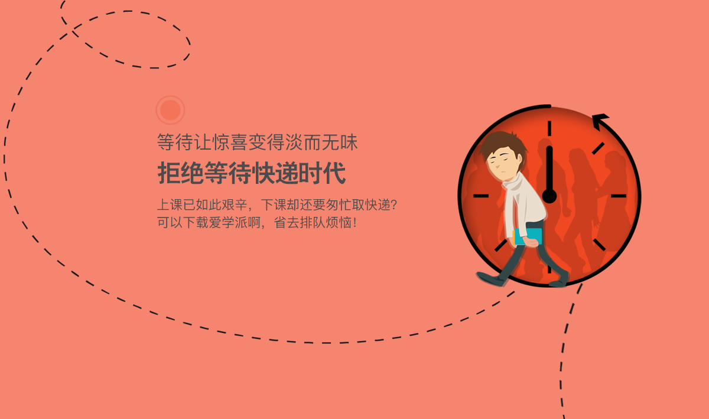

爱学派：为高校大学生快递解决“最后一百米”
接收快递对于多数工作人士而言，并不是什么麻烦事，快递员直接上门服务。可在学校里，收快递却一直令学生们颇为头疼———因为快递一般都只送到校门口或固定收件点，也很难有专人管理。而且取件时间有限，还得在一堆快递中翻找，安全也无法保证。种种弊端让大家怨声载道。
浙江传媒学院的宏燕同学,刚在网上买了包，却有些担心。这几天的课表很满，还要去社团参加活动，室友也都忙，找谁代领快递是个麻烦事。在忧心了几天后，宏燕同学接到电话，询问自己何时方便，快递可以送上门。这可把宏燕开心坏了。原来学校里有个“爱学派”，可以代为接收快递，省去了不少麻烦。
从用户需求出发，解决学生拿快递难的问题
像宏燕这样的同学不少，学生的需求就是市场。面对这样的校园快递环境，爱学派应运而生。据了解，爱学派是一家专注为高校大学生提供“最后一百米”物流配送服务的公司。目前，爱学派已与多家学校达成合作，通过在校内建设标准化门店，并实行规范化管理，为大学生提供最优质的物流服务，并打造美好的校内物流环境。
全面打通货流与信息流
爱学派隶属于上海指端信息科技有限公司，由深受大学生喜欢的电商平台爱学贷战略投资。上海指端信息科技有限公司是一家为电子商务、物流快递提供软件硬件一体化服务的供应商，秉承“智慧创新，共享价值”的核心原则，以客户为中心，市场为导向，继续探索在新技术与新业务流程中无线通讯领域的应用，为电商企业在现代物流信息系统的建设与创新提供更多的专业支持与服务。
在指端科技的技术支撑下，爱学派打通货流和信息流，实现了物流和信息流的同步，实时与用户沟通交流，解决了用户接收快递的烦恼。目前在浙传就读的李婷说，在有爱学派之前，收快递真的很麻烦，每天只能在中午时间取件，还要从上百个快件里找自己的东西。现在，取件时间自由，也不用自己动手找，她对爱学派非常满意。